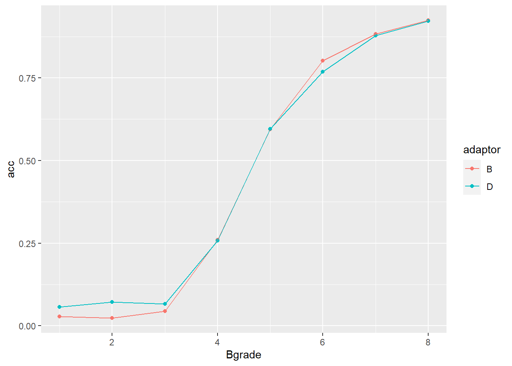

3 Vaardigheid 2: Een Open Source analyse reproduceren
Met onderstaande uitwerkingen wil ik laten zien, dat ik artikelen op reproduceerbaarheid kan beoordelen en (een stukje van) een analyse kan nabootsen waarvan de gebruikte code openbaar is gemaakt.
3.1 Ripeta criteria
De reproduceerbaarheid van een artikel wordt gescored aan de hand van de Ripeta criteria. Ik heb het volgende Open Source artikel van Pubmed Central op reproduceerbaarheid beoordeeld: Chaimayo, C., Kaewnaphan, B., Tanlieng, N. et al. Rapid SARS-CoV-2 antigen detection assay in comparison with real-time RT-PCR assay for laboratory diagnosis of COVID-19 in Thailand. Virol J 17, 177 (2020) (zie tabel 3.2).
Dit artikel vergelijkt de prestaties van een SARS-CoV-2 antigeen sneltest, de Standard™ Q COVID-19 Ag kit van Biosensor®, met die van een RT-qPCR, specifiek de Allplex™ 2019-nCoV Assay van Seegene®. Een RT-qPCR vormde op het moment van publicatie als de gouden standaard voor het diagnosticeren van SARS-CoV-2 infecties. Er zijn 454 neus-keel monsters afgenomen bij participanten die mogelijk besmet waren met COVID-19. Elk monster is gebruikt voor een RT-qPCR en een antigeen sneltest. De antigeen sneltest liet een gevoeligheid en specificiteit zien vergelijkbaar aan de RT-qPCR en kan gebruikt worden voor screening op SARS-CoV-2 (Chaimayo et al. 2020).
Onderstaande tabel is overgenomen uit het artikel en laat zien dat voor zes participanten de (ruwe) uitslagen van de PCR en antigeen sneltest niet overeenkwamen.
| Gender | Age | Initial diagnosis | Specimen type | PCR Ct-value E | PCR Ct-value RdRP | PCR Ct-value N | Rapid Ag test result | Interpretation |
|---|---|---|---|---|---|---|---|---|
| F | 33 | Pneumonia | NP swab + throat swab | 31.18 | 39.20 | 35.54 | Negative | False negative |
| F | 67 | Pre-operative | NP swab + throat swab | > 40 | > 40 | > 40 | Positive | False positive |
| M | 75 | Pre-operative | NP swab + throat swab | > 40 | > 40 | > 40 | Positive | False positive |
| F | 61 | Pre-operative | NP swab + throat swab | > 40 | > 40 | > 40 | Positive (weakly) | False positive |
| F | 83 | Pre-operative | NP swab + throat swab | > 40 | > 40 | > 40 | Positive (weakly) | False positive |
| F | 64 | Pre-operative | NP swab + throat swab | > 40 | > 40 | > 40 | Positive (weakly) | False positive |
| Transparancy Criteria | Definition | Response Type | Score |
|---|---|---|---|
| Study Purpose | A concise statement in the introduction of the article, often in the last paragraph, that establishes the reason the research was conducted. Also called the study objective. | Binary | TRUE |
| Data Availability Statement | A statement, in an individual section offset from the main body of text, that explains how or if one can access a study’s data. The title of the section may vary, but it must explicitly mention data; it is therefore distinct from a supplementary materials section. | Binary | TRUE |
| Data Location | Where the article’s data can be accessed, either raw or processed. | Found Value | All data generated or analysed are included in the published article and its additional files. |
| Study Location | Author has stated in the methods section where the study took place or the data’s country/region of origin. | Binary; Found Value | Bangkok, Thailand |
| Author Review | The professionalism of the contact information that the author has provided in the manuscript. | Found Value | Navin Horthongham is corresponding author. navin.hor@mahidol.ac.th |
| Ethics Statement | A statement within the manuscript indicating any ethical concerns, including the presence of sensitive data. | Binary | TRUE |
| Funding Statement | A statement within the manuscript indicating whether or not the authors received funding for their research. | Binary | TRUE |
| Code Availability | Authors have shared access to the most updated code that they used in their study, including code used for analysis. | Binary | FALSE |
3.2 Analyse reproduceren
Voor de reproductie heb ik een Open Source paper gekozen uit een gegeven studie die heeft onderzocht hoe reproduceerbaar papers gepubliceerd onder het Open Source beleid nou écht zijn. Van dit paper heb ik een stuk code gereproduceerd.
Het gekozen paper uit de gegeven studie (Paper06): Arthur G. Samuel, Psycholinguists should resist the allure of linguistic units as perceptual units, Journal of Memory and Language (2020)
De bijbehorende code (Reproducing.Rmd) en dataset (osfstorage-archive/Exp2_Final_Adaptors_CVtestitems) zijn te vinden op OSF.
De codes in deze RMarkdown zijn gebruikt om de figuren te maken die in dit paper weergegeven worden. Op een schaal van 1 (zeer slecht) tot 5 (zeer goed) geef ik de leesbaarheid van de codes in dit bestand een 2. Hieronder reproduceer ik een deel van de data om figuur 2 uit het paper na te maken. Het koste me moeite om dit figuur te reproduceren, met een score van 3 op een schaal van 1 (zeer moeilijk) tot 5 (zeer makkelijk).
Een stuk code met een helperfunctie van de RMarkdown auteur voor het inlezen van de data:
knitr::opts_chunk$set(echo = TRUE)
rm(list=ls())
if(!require(tidyverse)){install.packages('tidyverse')}
if(!require(lme4)){install.packages('lme4')}
if(!require(readr)){install.packages('readr')}
read_exp_data <- function(filenames_BF_ID, to_skip){
BF_ID <- NULL
for (i in filenames_BF_ID){
adaptor <- substring(i, 1, 1) # first letter of the filename
temp <- read.csv(i, skip = to_skip) %>%
select(1:8)
temp1 <- temp %>%
select(1,2,3,4)
if (grepl('X', colnames(temp1)[3])){
temp1 <- NULL
} else {
temp1 <- temp1 %>%
mutate(participant.id = colnames(temp1)[3],
adaptor = adaptor) %>%
rename(response = colnames(temp1)[3],
RT = colnames(temp1)[4])
}
temp2 <- temp %>%
select(1,2,5,6)
if (grepl('X', colnames(temp2)[3])){
temp2 <- NULL
} else {
temp2 <- temp2 %>%
mutate(participant.id = colnames(temp2)[3],
adaptor = adaptor) %>%
rename(response = colnames(temp2)[3],
RT = colnames(temp2)[4])
}
temp3 <- temp %>%
select(1,2,7,8)
if (grepl('X', colnames(temp3)[3])){
temp3 <- NULL
} else {
temp3 <- temp3 %>%
mutate(participant.id = colnames(temp3)[3],
adaptor = adaptor) %>%
rename(response = colnames(temp3)[3],
RT = colnames(temp3)[4])
}
BF_ID <- rbind(BF_ID, temp1, temp2, temp3)
}
return(BF_ID)
} Een stuk code voor het berekenen van het aantal participanten in (waarschijnlijk) de ‘No-Release’ conditie:
wd <- here::here("data_raw", "data02_assignment_1.2")
setwd(wd)
filenames_ID <- list.files(pattern = "ID")
ID <- read_exp_data(filenames_ID, to_skip =4) %>%
mutate(participant.id = tolower(participant.id))
nlevels(as.factor(ID$participant.id))## [1] 33Een stuk code voor het berekenen van het aantal participanten in (waarschijnlijk) de ‘adaptation’ conditie:
setwd(wd)
filenames_FAD <- list.files(pattern = "FAD")
FAD <- read_exp_data(filenames_FAD, to_skip =6)
nlevels(as.factor(FAD$participant.id))## [1] 34Een stuk code voor het filteren van participanten uit de (waarschijnlijk) ‘No-Release’ conditie:
setwd(wd)
# filtering
to_filter <- ID %>%
drop_na() %>%
mutate(adaptor = ifelse(adaptor == "B", "B", "D"),
B = ifelse(response == 4, 1, 0),
D = ifelse(response == 1, 1, 0),
adaptorB = ifelse(adaptor == "B", 1, -1),
adaptorD = ifelse(adaptor == "D", 1, -1),
Bgrade = parse_number(as.character(AudioWaveFile1))-1) %>%
filter(Bgrade == 1 | Bgrade == 7) %>%
group_by(participant.id, Bgrade) %>%
summarize(D_response = mean(D)) %>%
pivot_wider(id_cols = participant.id,
names_from = Bgrade,
values_from = D_response) %>%
mutate(diff = `1` - `7`) %>%
filter(diff < 0.6)
to_filter## # A tibble: 4 × 4
## # Groups: participant.id [4]
## participant.id `1` `7` diff
## <chr> <dbl> <dbl> <dbl>
## 1 asav 0.944 0.389 0.556
## 2 kjol 0.722 0.194 0.528
## 3 kpao 0.972 0.833 0.139
## 4 ttys 0.972 1 -0.0278Deze codes geven mij dezelfde uitkomst als de RMarkdown auteur. Nu kan ik een figuur, figuur 2 uit het paper, reproduceren:
wd <- here::here("data_raw", "data02_assignment_1.2")
setwd(wd)
FAD <- FAD %>%
drop_na() %>%
filter(! participant.id %in% to_filter$participant.id) %>%
mutate(B = ifelse(response == 1, 1, 0),
D = ifelse(response == 4, 1, 0),
adaptorB = ifelse(adaptor == "B", 1, -1),
adaptorD = ifelse(adaptor == "D", 1, -1),
Bgrade = parse_number(as.character(WaveFile))-1,#AFAIU the lower the number the closer to B, but I might be wrong
RT = RT*1000)
# Figure 2
FAD %>%
group_by(participant.id, Bgrade, adaptor) %>%
summarize(part_mean = mean(D)) %>%
group_by(Bgrade, adaptor) %>%
summarize(acc = mean(part_mean)) %>%
ggplot(aes(x = Bgrade, y = acc, color = adaptor)) +
geom_point() + geom_line()
Deze figuur ziet er volgens de auteur hetzelfde uit als figuur 2 in het paper De vormen kloppen, maar de Y-as en as titels zijn door de RMarkdown auteur anders gekozen. De Y-as laat fracties zien i.p.v. percentages. Dit kan gemakkelijk aangepast worden:
FAD %>%
group_by(participant.id, Bgrade, adaptor) %>%
summarize(part_mean = mean(D)) %>%
group_by(Bgrade, adaptor) %>%
summarize(acc = mean(part_mean) * 100) %>%
ggplot(aes(x = Bgrade, y = acc, color = adaptor)) +
geom_point() + geom_line() +
theme_classic() +
scale_colour_manual(values=c("blue","red"),labels=c("B adapt","D adapt"), name = "") +
labs(title="Released Final Position Adaptors on CV Test Series", x = "Continuum Step", y = "Percent \"d\" Report") +
ylim(0,100)Figure 3.1: Identification of the members of the /ba/-/da/ test series, as a function of the adaptation condition, for adaptors that included released final stops. After adaptation with final-/d/ words (red curve/squares) identification as “D” was reduced compared to adaptation with final-/b/ words (blue curve/circles).
Bovenstaand onderschrift is letterlijk overgenomen uit figuur 2 van het paper zelf.